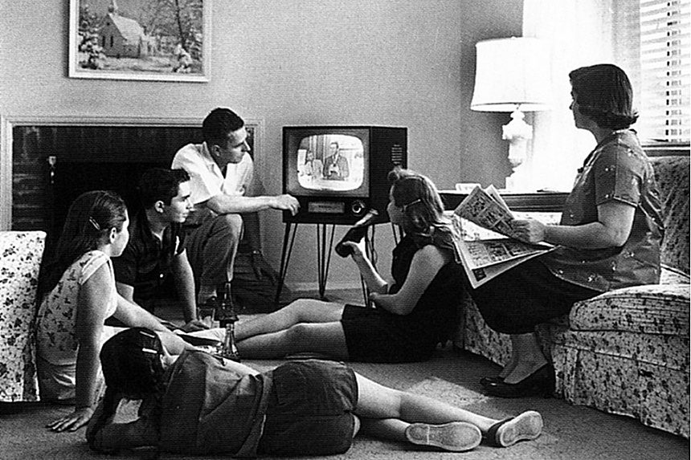

Post war
Costs of the War
World War II would be the deadliest war in human history. It resulted in the death of 50 million military personnel and civilians across the world. Approximately 300,000 Americans died of the 15 million in uniform during the war as a whole. 800,000 Americans were left wounded. The United States was left with over $258 billion in debt. Other nations suffered more than the United States however. The Soviet Union suffered the most casualties with somewhere in the range of 22-27 million. Other nations like France were completely destroyed from German occupation.
The people who served returned from war with fear of problems finding homes and jobs. Many people with the fear didn’t realize the economy was doing well. Per-capita income for Americans would increase during the years of war. The GI bill would help transition the GIs (the men and women who served) back into their lives. They would be able to afford to continue their education at government expense. Suburban communities would be built as well to help them afford homes. Levittown was built to provide 17,000 mass-produced, low price homes on Long Island, New York. Many middle-class Americans would transition into suburbanites.
United Nations
The founding of the U.N. hoped to maintain peace and provide equal rights of people. The Senate voted to approve the charter along with the ratification from 29 nations. The five major allies of the war had a seat at the table (U.S., G.B., France, China, and the Soviet Union). The U.S. proposed a plan to regulate nuclear energy and eliminate atomic weapons in the Baruch plan. The Soviets would reject the plan and this proved the Soviet Union wasn’t in it for peace. They also declined to participate at the International Bank for Reconstruction and Development.
Hostility would emerge as the Soviets remained in occupation of countries in Eastern Europe. Russia from here on out would look to expand its influence and take over Eastern Europe. The U.S. and Great Britain would look at this as a violation of Self-Determination.

Soviet, U.S. Tensions
The temporary alliance between the U.S.S.R. and the United States came to an end. Poor relations of the past would return between these two. The Soviets still had a grudge against the other allies in a few instances. Stalin complained about the U.S. and the British for waiting to open the second front in France. The Soviet Union also took on half the deaths of the war. At Potsdam, there would be some conflicts over post-war negotiations. Throughout the war, FDR tried to cooperate with Stalin. When Truman became president, he became unsure if the U.S. could trust the Soviet Union. These tensions would lead to the Cold War and the threat of nuclear war.
With Yalta splitting Germany into four occupation zones, the Soviets looked to make the eastern zone a new communist state. They would attempt to force the democratic sector of Germany to leave in order to tighten communist control of East Germany. The U.S. and Great Britain would be tired of “babying the Soviets” (Truman quote). Churchill would make his “Iron Curtain” speech which would call for the partnership between democracies to contain the expansion of communism.
Popular Culture/ Economy
While the Cold War lingered in the background, the 1950's were a good time in the United States. Television became common among American families in the 1950's. Almost every American family had a television set. Viewers watched situation comedies, westerns, quiz shows, and sports. In fact, some people such as FCC chairman Newton Minnow criticized television. Critics were worried about the impact on children if they watched 5 or more hours a day. People weren’t just watching TV though. Americans read more than ever in this time. Novels in the 1950's became popular for writing about the individual’s struggle against conformity. Jack Kerouac wrote On the Road in 1957 which describes the life of “Beatniks.” Allen Ginsberg also wrote the poem “Howl” which came along with the beatniks youth rebellion against social norms. Teenagers also loved rock and roll music, African American music, blues, and white country music. Elvis Presley would emerge as a big name in music. Social reform and counterculture movements would also rise in the 1960's.
Corporate America would dominate the economy. More workers held white collar jobs than blue collar jobs for the first time in history. These organizations promoted teamwork and conformity. The decades from 1945-1980 would define the golden age for corporate America.
